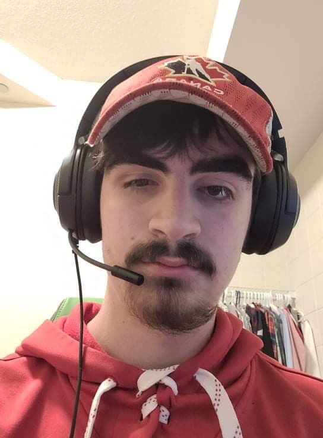

Krystal and Liam's Fantasy Super Smash Bros Team
Krystal and Liam will both be sharing what top 3 characters they
would choose to be on their Fantasy Super Smash Bros Team!
Meet Krystal
From a young age Krystal had to learn what it takes to be good at Super Smash Bros.
With two older brothers, the competition was always stiff.
When choosing a fighter, the choice always needed to be strategic…pick the seemingly
innocent characters so your opponent doesn’t suspect you know how to play.
Which is why below are Krystal’s top 3 picks for her Fantasy Super Smash Bros Team.
- Kirby - As innocent looking as it gets. Kirby’s main strength is annoying your opponent, with the
ability to inhale other characters and take on their special abilities, Kirby is a great choice if you want
to bother others.
- Ness - For a small child Ness’ power is surprisingly fatal. Almost all of his moves can send your opponents to
the blast line with serious force. Not many people are willing to take the risk on Ness, which makes him
a great unexpected choice.
- Yoshi - if Kirby is annoying than Yoshi is infuriating. Yoshi has a similar ability to Kirby that he can
inhale other characters, except he can’t take on any of their abilities. With his egg shield and fast air
speed Yoshi can get out of almost anything. This little green dinosaur is sure to secure you a win.
Meet Liam

Liam was a very big gamer growing up so when it came to Super Smash Bros he picked it up easily enough.
Liam had two younger brothers who were also pretty good gamers and you could argue they were more competative and picked up on the skills quicker.
This never stopped Liam from doing the best he could with the knowledge and skills he had.
To be fair though, most picks were just because they were some of Liam's favourite characters growing up.
The character choices were not so innocent and would be picked to be a little more agressive.
Below are the choices that Liam would pick for his Smash Bros team
- Bowser - Public enemy of Mario since the early 1980s Bowser is not a foce to be messed with.
Although he is one of the larger characters and has more targetable surface area he makes up for it with his heavy hits.
His final smash in Smash Bros Ultimate can be a real game ender if you know what you're doing and can use it effectively.
- Link - Link is just a bit of a favourite for me, I have played Zelda from such a young age nad it is my favourite game series by far.
I kind of can't help but picking him. He is pretty agile in the battlefield making him useful for getting around.
His final smash is a little less intimidating and a lot easier to dodge but powerful if you hit it right.
Can you really blame me though, Link is a pretty cool character regardless of his stats, he saves Hyrule all the time, good enough for me.
- Steve - Minecraft was a very popular game growing up and still is. People always made jokes of Steve making it into Smash.
I don't think anyone really expected it but it was a cool addition nonetheless.
The way he plays is very different from others but thats what makes him cool. He still has his block building, crafting and many other cool things.
Regardless of whether he was a joke or not to begin with, its cool to have him in the Smash Bros family.
It is also kind of funny to see Kirby take on a form of him and just become a pink square.